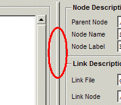

|  | The separator bar is located between the Node Tree panel and the Node Description panels. Clicking Mouse Button 1 on this bar and dragging allows the relative sizes of the panels to be adjusted. The mouse cursor will change to a horizontal double-headed arrow when over the separator bar. |